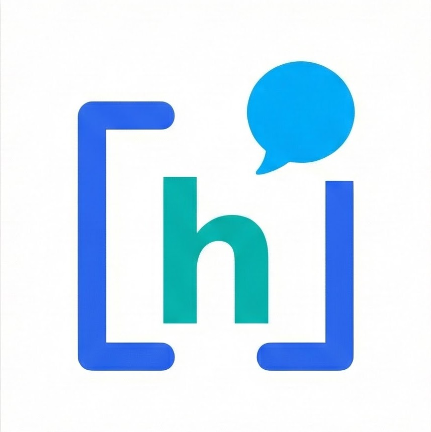
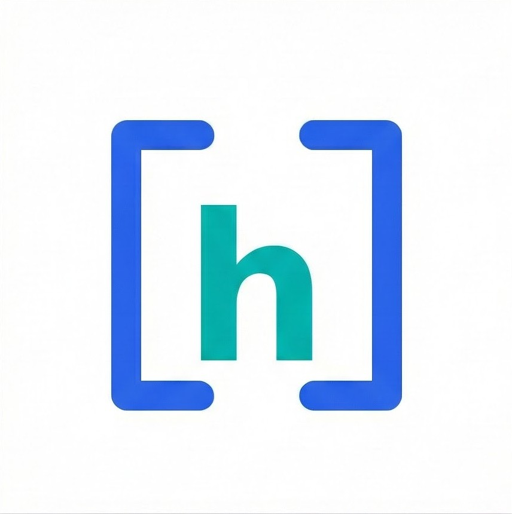

Экосистема «Индекс Хирша»
Четыре направления, одна цель — ваша публикация в международном журнале
Обучение
Видеокурсы с пошаговыми инструкциями. От дизайна исследования до публикации.
ПодробнееКлуб
Закрытое сообщество для поиска соавторов и запуска совместных проектов. Доступ ко всем курсам.
Подробнее
Консалтинг
Индивидуальное сопровождение: дизайн, статистика, редактура, подача в журнал.
Подробнее
Блог
Азбука медицинской науки — статьи о научном письме, методологии и публикациях.
Подробнее